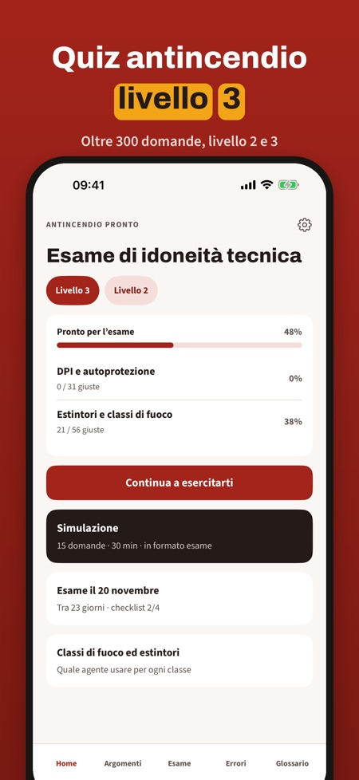
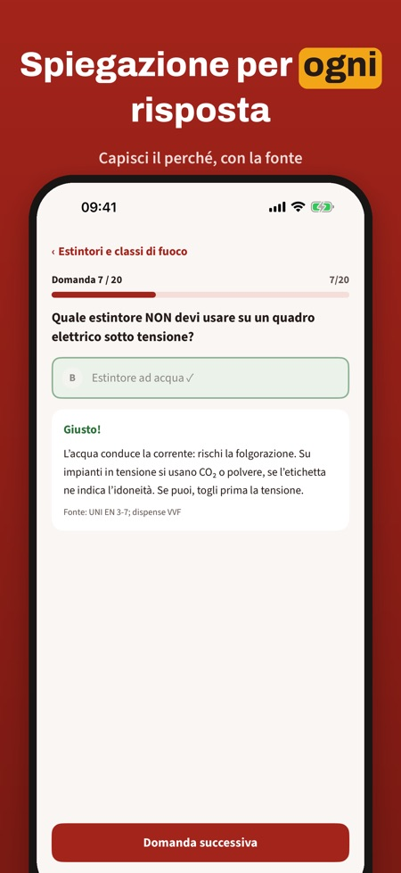
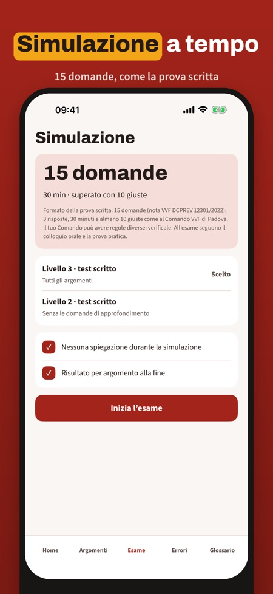

Antincendio Pronto ti prepara all'esame di idoneità tecnica per addetto antincendio di livello 2 e 3 con oltre 300 domande, simulazioni a tempo e ripasso degli errori.



Ti aiuta a prepararti all'esame di idoneità tecnica per addetto antincendio di livello 2 e 3.
Oltre 300 domande in 6 argomenti, scritte sulle dispense VVF e sul D.M. 2 settembre 2021.
Sì, ogni risposta ha una spiegazione e la fonte.
Sì, una simulazione in formato esame, a tempo. Senza acquisto puoi farne una completa.
Sì, l'app funziona senza connessione.
20 domande, una simulazione d'esame completa, il glossario e la checklist.
No. La versione completa è un acquisto unico che sblocca tutte le domande, le simulazioni e le statistiche. Nessun abbonamento.
No, è indipendente e non è collegata ai Vigili del Fuoco né ad enti di formazione. L'esame si sostiene presso il Comando VVF.
Antincendio Pronto ti aiuta a prepararti all’esame di idoneità tecnica per addetto antincendio di livello 2 e 3.
Senza acquisto puoi esercitarti con 20 domande, fare una simulazione d’esame completa e usare il glossario e la checklist. La versione completa è un acquisto unico che sblocca tutte le domande, le simulazioni e le statistiche. Nessun abbonamento.
Antincendio Pronto è indipendente e non è collegata ai Vigili del Fuoco né ad enti di formazione. L’esame si sostiene presso il Comando VVF.